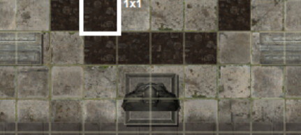
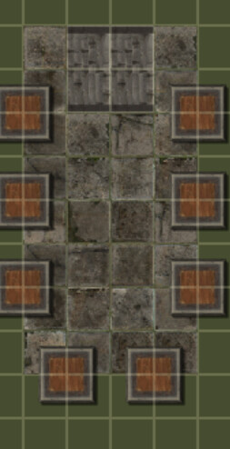

no it’s just a roof with some pedestals on it
Pedestal Roof
You have finally found it. On a dramatic pedestal in the middle of the roof is Gravity Destroyer™, the most powerful of all the beyblades, except not really, but it does have the best name. Next to it, lying on the ornate stone pedestal, is a beyblade launcher.
Are you powerful enough to accept it? Or are you just a coward…?
Gravity Destroyer™
- it’s literally just a beyblade. it doesn’t have hidden blades or any kind of magic, it’s just a beyblade.
Launcher:
- functions as a beyblade launcher, but contains a hidden compartment containing cyanide powder that can be uncovered by an Int% check.
behold, the silliest location in the game. finally, i can use my beyblade cyanide ring.
Sun Corridor
You step into a long corridor that glitters like the sun. Looking more closely, you see that the walls and floor are covered in sparkling diamonds. On the far side of the room, you see another door; from what you remember of the map, you think it leads to open air. On the ground, you see a few scattered objects: some sort of circular disc, a weird electronic grid of blue squares, and a statuette. The main door to the corridor has a circular bronze indentation, with tiny writing engraved around the edges.
The objects are a gold discus (which can be used as a mediocre ranged weapon), a solar panel, and a statue of Apollo. All of these become obvious upon inspecting the object. Now it has Trochi’s dart too.
Moon Corridor
You step into a short corridor covered in mirrors. The walls and the ceiling are both covered in mirrors, and you see your image reflected in them, bouncing back and forth between the walls ad infinitum. The only part of the room without mirrors is the floor, which has a few miscellaneous objects lying around on it – a silver pendent with a crescent moon, a hunk of cheese, and a book with a moon on the cover. The door to the corridor has a circular bronze indentation, with tiny writing engraved around the edges.
The pendant is completely nonmagical and has no effect whatsoever. The cheese is equivalent to one serving of Good Healthy Food (yes, it’s a joke about the moon being made of cheese. Sue me.) The book takes 1 hour to read, but contains the following ritual:
The book discusses the importance of time in performing rituals. You learn of a ritual that can only be performed outside, at night, under the light of the moon. It additionally requires a scrap of fabric tied around a metal object, which is consumed in the ritual. It makes the clothing of the performer of the ritual impervious to change for the remainder of the night – in particular, blood will simply roll off of it.
Star Corridor
You enter a dark blue corridor studded with gemstones in various colors. The gemstones seem to form constellations; you absent-mindedly remember hearing that stars have colors beyond what is visible to the human eye, and wonder if perhaps that could explain the different colors. On the floor lies a large chart, a clay model of Saturn, and a bag of Starburst candies. The door to the corridor has a circular bronze indentation, with tiny writing engraved around the edges.
Objects: The large chart is a star chart (which can be easily identified as such by examining it). If someone compares the night sky to the star chart, they will notice that it doesn’t seem to match. The clay model of Saturn is exactly what it sounds like. The bag of candies contains four candies, each of which is Bad Unhealthy Food.
Earth Corridor
You enter a corridor that seems to be made of earth, despite being in a stone castle. A few weeds are growing in the floor, which otherwise seems empty. The door to the corridor has a circular bronze indentation, with tiny writing engraved around the edges.
This corridor is empty, but the dirt in it can be used for dirt things (and is thick enough to potentially bury objects in). It’s relatively soft and can be dug up without special tools.
Blade Corridor
You enter a corridor that feels sharp and angular. Running your finger along the edge of the wall for a moment, you pull it back in pain, realizing that even the stone the room is made of has sharp edges. On the floor is a strange-looking sword, as well as a whetstone. The door to the corridor has a circular bronze indentation, with tiny writing engraved around the edges.
Items: the whetstone can be used for normal whetstone purposes. The sword is a messer.

reposting
3-A - Broken Ramparts
3-B - Research Roof
3-C - Pedestal Roof
2-A - Game Room
2-B - Chemistry Lab
2-C - Biology Lab
1-A - Drawing Room
1-B - Dining Room
1-C - Library
1-D - Ruined Tower
Entrance Hall
Sun Corridor
Moon Corridor
Star Corridor
Earth Corridor
Blade Corridor
crossed off = room is done
to be done still:
3-A - Broken Ramparts
3-B - Research Roof
1-C - Library
Entrance Hall
Broken Ramparts
As you walk out onto the ramparts, you notice that they are in a state of great decay. In particular, you notice a sheer drop down to the Broken Tower on one end, the stone of the castle flaked with dust and ash from whatever disaster destroyed it. A clipboard is discarded in the corner of the top of the other tower.
Clipboard:
- Has the following written on it:
Report By The Crossbench Committee On Arcane Embezzlement
- No evidence substantiable in a court of law can be determined, given that arcane evidence is not yet permissable according to the Supreme Court, as per Crown Prosecution Service v.█████████ (200X).
- However, the committee finds it pertinent to mention that we found evidence pointing to ████████ ██████████ using rituals to siphon funds from other classified ventures in order to fund Project ████████
- Due to the requests of those involved, in particular the young candidate for the Ultimate ██████████, we feel it pertinent to not reveal the members of this commitee to the House of Commons.
- However, we believe that there is evidence to end Crown funding to Project ████████ as result of it gaining funds through illicit methods, and wish to put this to a vote in the House of Commons.
Reason for Rejection: Parliamentary soverignty does not extend to the circumvention of rulings made by the Supreme Court Of The United Kingdom. The government declines to call a session of parliament in order to debate the findings of this report. A █████████ classification will be placed on all instances of this document, and it will be sent to the directors of Project ████████ for review, given the involvement of the (possible) Ultimate █████████ and Ultimate ██████
Entrance Hall
As you enter the Entrance Hall, you are struck by the majesty of the room. A magnificent painting of the town’s landscape covers the walls, but it is unburdened by mist. You can see four towers at each edge of the panorama, each backdropped by large hills.
Every part of the room glistens with a vision of a long-dead past, except for the strange, modern-looking secretary’s desk dwarfed in the cneter of the room. There is a baguette on the desk, and something strange… scratched into it. A filing cabinet is attatched to the desk.
An office chair sits behind the desk.
Baguette:
- It is Good Healthy Food, and strangely doesn’t seem that hard, despite seemingly being discarded for a long time.
Desk:
- Has the following scratched into it.
theyre closing in. tim’s talking to the fates. i think tim has my son. i throw myself on the mercy of the magic circle
Filing Cabinet:
- Compartment 1 - Contains a statue-clock of The Thinker covered in dried blood. Signed on the bottom is the words “remember your promise, Dad. i know you’ll come back to see me at some point.” in crayon, faded out partially.
- Compartment 2 - Contains a pen, a set square, a clipboard with nothing on it, and a nameplate with “Nicholas Arden” written on it in neat text.
Research Roof
As you walk onto the research roof, you are struck by the amount of electronic equippment on it. A large-looking computer CPU with exposed wires is in the corner. A secure-looking metal container is in another corner. Most notably of all, of course, there is a gigantic device which looks like some kind of unconventional telescope.
CPU:
- Has torn wires, and was clearly connected to something at some point. Additionally, the motherboard looks slightly loose. If kat asks, we will give him a bunch of unintelligible letters and numbers and claim they’re the specs of the PC.
- Attatched to the motherboard is a miniature scepter revealed if players choose to search the PC for it:
Scepter of Ultimate Talent (Legendary)
Begins the game with a single charge. When used, choose an Ultimate. You will learn if a person with that Ultimate Talent exists, their current location, and gain +20% on all rolls to kill them for the next 24 hours. Cannot be used during Deadly Life.
- Wires can be ripped out to be used for Things and Purposes. If somebody wants to kill with electricity somehow, they’d probably be useful.
Metal Compartment:
- Contains a
powerdrill,threetwo smoke grenades, a long coil of metal wire, a scientific calculator, and a hardened spanner.
“Telescope”
- Is actually a magical laser. Requires a Str% roll to aim, and has an Agi% chance of being aimed Exactly or Inexactly When fired, it passes through walls, leaving only scorch marks on the wall.
- This laser can be fired by a single player once every 24 hours. Other players may still fire it during that time. If more than 5 players use the laser in a space of 24 hours, the laser will cease to function, and Monoluna will instantly put an extra motive in play for damaging university property. (Obviously, we’ll warn them about this.)
- When it hits someone, it makes a Ranged attack against them using the person who aimed it’s stats. If it kills, it does so by charring their entire body, making it look as if they died by fire.
- It can only aim at locations inside the Castle that are not below it.
- When a player looks through the “telescope”, they instead see the following on a computer screen.
**[!] Attention User!**
Use of this thaumic laser may cause irreperable damage to the Castle. Are you sure you want to continue? Turn the laser to the right to say "Yes", to the left to say "No", and to the bottom to say "Yes, don't show me this warning again."
Castle Library
As you enter the second library, you immediately determine that the former owner of the castle was a fraud, because the few books you can see scattered on the floor have nothing but blank pages. In the center of the room is an ornate mahogany table, splayed on top of which is a map of the world. You note in particular that this map has an up-to-date map of the Atlantic Wastes, a place which has only existed for just over 50 years. It may be worth checking that map out?
Maybe one or two of the books that lines the shelves on the wall is real?
Shelves:
- When a player checks the shelves, rand 1-3. Give them one of the following books:
-
-
You find a copy of Blood On The Eagle’s Claw: A History of Weaponry in Germany by Josephine Farrierson. It has gold leaf coating the edge of the pages.DESTROYED BY KATZE
-
-
-
- You learn about a sword called a Messer, which was used by middle-class merchants in 16th century Germany to circumvent a law that made it illegal for non-aristocrats to use swords by making something which was legally a knife but practically a sword. The author cited a few weird sources, though, in particular something about… a magical elixir she got from the long-lost diary of King Darius of Persia? Weird. Really, most of the book passed you by, knowing that you were reading something written by… a murderer…
-
-
- You find a copy of The Great Crisis Of Arcana by Sir Timoleon Silverheart. It is torn, and somebody has scribbled “WAS IT WORTH IT” in the margins.
-
-
- The writing style of the book is almost amateurish in its’ simplicity. Mr. Silverheart talks about how through hardship, we can cultivate the power of the Ultimates and save humanity from an… impending magical crisis…? Something nags at your memory. You can’t quite figure out why, but you think you’ve read this exact book before… and you think you recognise the handwriting of the angry note…
-
-
- You find a copy of The Once And Future King by T.H White
-
-
- (this one does actually give +1 INT unlike the other two, but it’s obviously a very deliberate choice)
-
Table:
- Here’s the map of the Atlantic Wastes:


“Here is the second murder, an attempt to foil this Ultimate Hunt… that you have so neatly foiled for me.”
This case began when the Blackened became aware of the truth behind this game. Although he had been dead for centuries, it had been prophesied that one day he would rise again, in the time of England’s greatest need. Taking a false name and a false talent, and ensuring that not even the Mastermind knew his true identity, the Blackened entered the world of the killing game.
With his supernatural knowledge of the game, the Blackened concluded that even unmasking the Mastermind was not enough, and the only way he could come to the aid of England’s people was by creating a murder that no one, not even the Mastermind, could solve, thereby disrupting the powerful magic that runs the Ultimate Hunt and possibly even destroying the game singlehandedly.
When he discovered the long drop leading from the Sun Corridor to the Ruined Tower, the Blackened hatched a plan. He thought that he was more likely to create an unsolvable murder if the victim were an unexpected one: himself. As he travelled through the castle, he collected various materials, including a dart and a sword called a messer- a blade of German construction wielded by members of the middle class to circumvent rules preventing non-aristocrats from wielding swords by means of technically being a knife.
At last, he decided that the time was right to put his plan in motion. Using his Ultimate Ability, he disabled the camera system entirely. While the Mastermind was still reeling from the loss of their cameras, he began setting the stage, leaving a note to try to make it seem as if he had been pursued by another student, shouting frantic messages in the Sun Corridor, and scratching up the diamond corridor with his blade. To make his death more convincing, he stabbed his artery with a dart in order to leave a trail of blood, and make the order of the events leading up to his death appear unclear.
Finally, he took his sword, drove it through his chest, and stepped backwards off of the ledge to the ruined tower. The Blackened fell to the floor, dripping blood below, before falling onto his side, trying to whisper one final message… a single word, almost made as an ironic taunt to the other players and the Mastermind- Rosebud. But the life faded from his reincarnated body, and soon after his noble illusion was exposed to the world…
…Isn’t that right, King Arthur Pendragon, the Ultimate Monarch (@DatBird)?
The Catacombs
As you venture deeper into the darkness left in the wake of the dragon’s defeat, you find yourself onset by an area much less…hospitable than the rest of the campus. This area is far darker than any you’ve experienced so far, only lit by torches hanging from various walls. At the center of the room is a large rug with the Eye of Providence on it. Like much of the room, it seems that it hasn’t seen use in a long time. Upon the three walls of the room other than the one you came from, you see tapestry above an archway, seemingly leading off into a further passageway.
To the left, you see:
Straight across form where you came, you see:

{kind=link}
To the right, you see:
Public: Torches (have an insignia of a Red Hand adorning them. Can’t be removed from the catacombs, can’t be naturally extinguished by time, and there are 10 of them.)
- Searching under the Carpet - Find a Scroll
Looking at the Scroll
After reading the scroll, you are able to ascertain that the main three areas in the catacombs are The Golden Skull, The Halls of Non Euclidean Geometry, and In Posterum. It also notes that the very fabric of reality in the Halls of Non Euclidean Geometry is best understood when not using linear approach to space or time.*
- Searching behind the ‘In Posterum’ banner - Find a fire poker:
Dragonbane (Legendary)
Chars the insides of players killed by this weapon. They will appear on the Monokuma File to have died from incineration.
The Golden Skull
{kind=link}
Upon entering this room, you see several coffins, with some barrels off in the corner. The musty air that once was natural with other locations in the catacombs seems to cease here.
-
Barrels - Upon checking the barrels, you recoil in disgust. You see several human body parts haphazardly stuffed into this thing.
-
Coffins (if it doesn’t have a pressure plate next to it) - Checking the coffin yields a gruesome, but peculiar sight. There are dead bodies in each of them, but you can’t distinguish who these people are. The coffins also feel somewhat lighter than you’d expect.
-
Coffins (if it has a pressure plate next to it) -Checking the coffin yields a gruesome, but peculiar sight. There are dead bodies in each of them, but you can’t distinguish who these people are. The coffins also feel somewhat lighter than you’d expect. While searching, you feel one of your feet start to sink.
-
Coffins (if it is partially on a pressure plate) - Checking the coffin yields a gruesome, but peculiar sight. There are dead bodies in each of them, but you can’t distinguish who these people are. The coffins also feel somewhat lighter than you’d expect. This particular coffin seems to be off in dimensions in places. One part seems to be lower than the rest.
-
Coffins (if it is entirely on a pressure plate) - Checking the coffin yields a gruesome, but peculiar sight. There are dead bodies in each of them, but you can’t distinguish who these people are. The coffins also feel somewhat lighter than you’d expect. The coffin’s base is lower than the ground around it.
Pressure Plate Puzzle
{kind=link}
If people check the room for pressure plates, tell them the points that they can find them.
This is simply about pushing the coffins into place
Upon completion:
Upon getting everything in place, a statue of King Arthur materializes at the bottom of the room with his hand outstretched.

King Arthur “Puzzle” Solution
Put Excalibur in his outstretched hand.
Upon completion:
You feel King Arthur’s presence acknowledge you as his stony pedestal starts to move from its original place. Where he once stood, now a stairway is revealed.
Stairway
After going down the stairs, you find yourself in a room with 8 doors.

First door:
You find nothing but…
Memorial Statue to Headmaster Mollyark
XXXX-1107
Engulfed in a Blazing Inferno
“To true magic he devoted his cause
To true magic his body returned”
Solution
Any source of magical fire (the fire from the furnace in the In Posterum room)
Any piece of wood can carry the flame
A magical gun can also work to ignite a flame
A lot of things work here
Flames that aren’t magic don’t burn hot enough to kill him
Mollyark’s statue seems to grimace as the flames cause your vision to blur. When you can finally see clear again, the only remnant of the statue is an unearthly Diamond which has been placed in your hand.
Second door:
You find nothing but…
Memorial Statue to Headmaster Ophelia Arsentred
XXXX-1306
Melted down to nothing
“The Ichor of the Beast
It extracts a heavy toll”
Solution
The blood of the dragon works!
Acid will start to corrode the statue, but the statue regenerates in response
Ophelia melts down to nothing, save a purely Black Diamond remaining where the statue once stood.
Third door:
You find nothing but…
Memorial Statue to Headmaster Bertrand Melvinross
XXXX-1602
Stabbed in the hands, then heart
“From my blood
Come revolution”
Solution
This one is absurdly easy
All it requires is an item that can stab
Melvinross’s head transforms into what could be called a purple Diamond.
Fourth door:
You find nothing but…
Memorial Statue to Headmaster Anastasia Hagweed
XXXX-1905
Vaporized
“Don’t aim that at me
I swear to the Cthonic pantheon”
Upon inspecting the statue, you see that you can move it quite easily.
Solution
Use the laser on it
It can be moved in range of it
All that remains of the statue is a Ruby shaped like a Diamond.
Fifth door:
You find nothing but…
Memorial Statue to Headmaster Joss
XXXX-2203
Drowned
“I WILL TELL YOU NOTHING
NOTHING AT ALL”
Upon inspecting the statue, you see that its jaw opens to reveal an imitation of a human mouth.
Solution
Open the jaw
Drown them that way
Joss’s eye opens to reveal an Emerald shaped like a Diamond inside.
Sixth door:
You find nothing but…
Memorial Statue to Headmaster Wyatt Mason
XXXX-0001
Decapitated
“It is finished”
Solution
This one is pretty obvious
Just decapitate them
Mason’s recently decapitated neck reveals a Sapphire gemstone shaped like a diamond inside.
Seventh door:
You find nothing but…
Memorial Statue to Headmaster Lord Henry Hargrave LXVII
XXXX-2004
From the cradle to the grave
In the deaths of innocents, he subsisted
His Innocent Mother, burned at the stake
His Guilty Father, ended by Henry’s own hand
Henry’s a demon, a foul lookalike of a man
Solution
Anything that would kill a vampire kills him
The ashes of the statue give way to a Perfect Diamond.
The last room contains a statue of…well…
Monoluna
Aretena
Monkeuma
Edifices resembling their heads have been grafted onto a statue of The Fates
Right in front of the statue you can see a pedestal with 7 indentations on it
Solution
Put the Diamonds in this order:
Sapphire
Purple
Emerald
Perfect
Ruby
Black
Unearthly
Upon putting all the gemstones in, the statue of The Fates rumbles, then bursts in a brilliant display, revealing a woman who proceeds to fall to the floor who appears to have been encased in it beforehand.
The Halls of Non-Euclidean Geometry
As you enter this infernal place, you feel the very air around you become foreign. While you’re still able to breathe, the miasma of this place was not meant for human beings. You find yourself simultaneously looking forward and back through an innumerable past as you are pulled toward a bubble in space.
You find yourself in [x]
Tower Of The Broken God
A musty stench fills the room. Your eyes are drawn upwards by the rings and rings of candles floating in midair, to a hulking monstrosity that fills half of the room. Long, coiled like a serpent, with metal arm after metal arm spiking off of it, shadowed by two massive wings is… a dragon.*
WHO DARES ENTER THE REALM OF LADON, THE BROKEN GOD-DRAGON
Scale after scale of metal and… some red substance twisting, coiling… and a horrific heat spreading across the entire room. Yep. This is definitely a dragon.
Ladon Details:
- will help you get away with murder
- can breathe fire and eat people
- is forbidden to harm anybody who is not already unconcious
- can only be slain by Excallibur or by being blown up.
- is a fucking asshole
stats for Ladon:
STR: 100, CON: 100, AGI: 40, INT: 01, LUK: 01
in case that’s relevant
")
Chapter Three: The Golden Apples of the Hesperides
And so the King of England died. The Ultimate Hunt continued, the subjects minds’ racing as they slowly uncover… the truth of this town. Where are they? Who are the Three Fates? Who is Timoleon Silverheart? Who is the Mastermind?
But the Ultimate Hunt was not over yet. More killing, more bloodshed, and more heartbreak threatened to snuff yet another life… they had gotten off easy this time. Or… had they?
A defeaning roar filled the town, centered around the tower that was ruined just yesterday.
48 hours remain until Monoluna (or maybe Clotho?)'s next lesson.
The killing game continues. You may perform actions freely.
Including, of course… Murder.
Animal Lab (HoNEG)
You find yourself in a room of seemingly antediluvian purpose. Cages pile upon cages, holding animals that screech with eyes of cyan. You feel a primalistic rage emanate from them…as if they lost their empathy. On the roof of the room, you can see a computer with cables tethered through a spherical door on the side (?) opposite (?) of your current position (?). All other forms of electronics appear to be broken in several spots.
- behind the cages is a master key to opening them (animals have a flat 50% chance to maul and kill people in the room. The opener becomes the blackened.)
- people can find a broken phone, broken electronic watch, and broken laser gun
- following the cable will send you to another room
- going back the way you came sends you to another room
- the computer is frozen, but it shows that it’s 3094 AD
Malefic Library
You find yourself in a surprisingly normal room, for a moment. You quickly realize that the walls themselves are pumping rhythmically. The towering shelves of this…library seem to of themselves not conform to any modern standards of architecture. They weave and loop and go through other shelves. An ooze exudes from most of the books, but maybe you can find some things to read. There’s also multiple exhibits, but you can’t see what’s in them at a distance.
NOTE: Getting an item in an exhibit requires an item trade
- Exhibit 1 - Shard Tipped Spear
Shard Tipped Spear (Weapon) - Seems to operate by the logic of this dubious world with its unearthly color [successful kills will result in the body of the other person being alive for 30 minutes, but unable to do anything]
- Exhibit 2 - Strange Mustache
Strange Mustache (Equipment) - Inherit the power of an eldritch deity! While equipped, you are able to hex someone to be pulled towards a certain location once per 24 hours. The fact that the person being hexed is moving unnaturally will be noticeable to any onlookers.
- Exhibit 3 - The Red Hand
The Red Hand (Equipment) - While equipped, grants the ability to lock items to the room of the current holder [once per 24 hours]
- Exhibit 4 - Pocketwatch
Pocketwatch (Item) - While held, you will have a foreboding presence that bypasses non-magical means of detection.
- Search for books
- 25% chance to find nothing
- 75% chance to find a relevant book (Ritual related but it’s always untitled)
- Going back the way you came sends you to another room
The Nexus
You find yourself in an abyss of rock and various devices. You soon realize you are upside down. You see a washing machine, a clock, cash register, a rocket, a refrigerator, a toaster, a machine that you can’t quite identify, and a cannon. Above you, you can spot a portal to something.
Washing machine dries things
Clock is an artifact that can slow down time in the current area or speed it up once per 24 hours
Cash register fills the inventory of players who check it out with useless money and takes their items. Items can be retrieved.
Rocket sucks things in instead of exploding
Refrigerator burns things
Cannon sucks things in
- Going back the way you came sends you to another room
- Going into the portal sends you to The Core. There is no other way to go to the core.
The Core
NOTE: You can’t get here unless someone goes through the portal in the NEXUS
You find yourself in a blindingly cyan room. As your vision adjusts to the horrid light, you find your gaze fixating on the thing in the middle of the room. There are cables attached to it, and the whole place seems to revolve around it as if it were a sun of sorts. Various piping, measuring devices, and cables float around the room.
Searching Measuring Devices:
- Thermometer (with no mercury), Barometer, and a Moodometer (Once per 24 hours can try to detect a player’s mood)
Piping:
- Checking the piping, you notice a disgusting sludge. Ew ew ew.
Cables:
- Checking the cables, you find that some are connected directly to the thing in the middle of the room.
Thing:
This requires a roll of CON (CON%) to not get blasted back.
Upon reaching the center of the room, you immediately notice a lance with an indentation of sorts, clearly meant for something. Something is in the test tube, but you notice that it rhythmically beats back and forth in a way that making strikes against it would probably prove fruitless.
Solution
Just use any item native to the Halls that would be able to break glass (exhibit items do count)
You have found the COSMIC EGG. You aren’t sure what it does, but it sure does look cool!
The Cosmic Egg can be added to the lance to craft AREADBHAR.
The Cosmic Egg causes the holder to glow an unearthly color at all times.
The Cosmic Egg allows the holder to freely move about the halls.
Unless the Cosmic Egg has been added to the lance, then it will teleport back to its original spot upon leaving the area.
AREADBHAR (Legendary) - A lance of utterly absurd power. +40% kill chance. Once per 24 hours, you may attempt to completely upend the structural integrity of the room you’re in or a room adjacent to you. Once per 24 hours, you may choose to turn off gravity for you for a minute.
- Going back the way you came sends you to a non-Nexus room